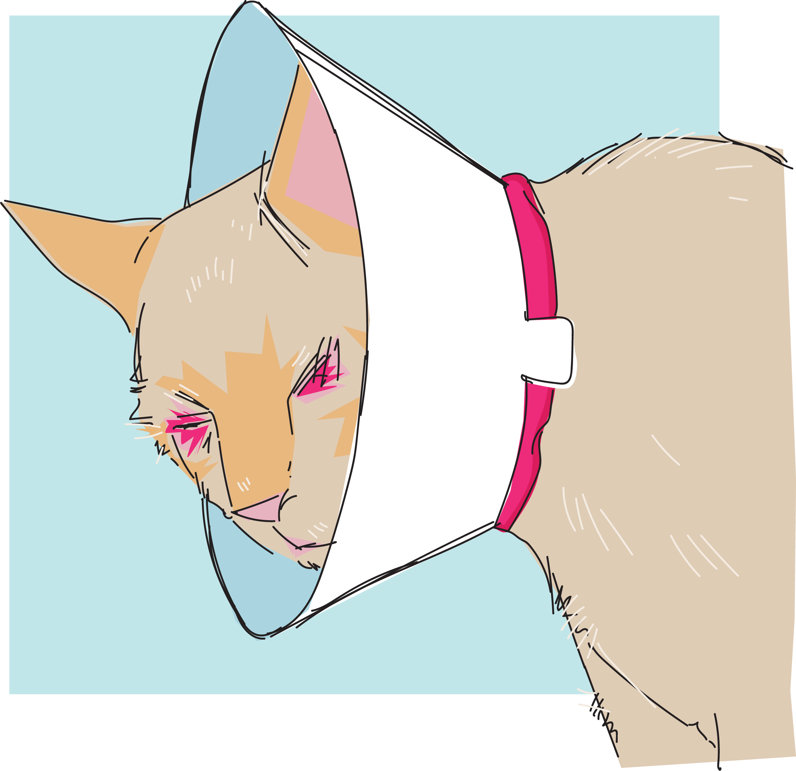

Apollo the Cat
Apollo’s story begins in the most heartbreaking way. He was discovered trembling in a bush, suffering from severe mange and eye infections so intense that they had left him blind. A completely feral cat, Apollo was in such a desperate state that rescuers were able to corner him and scoop him up. His pain was unimaginable, and he was lost, not knowing how to escape his torment. The rescue team immediately began treating his mange on the way home.
A vet visit brought devastating news: it was likely that Apollo would lose his sight entirely due to the infection. This was a crushing blow for everyone involved. But Apollo’s blindness unexpectedly became a tool for the team. It allowed them to make strides in socializing him, a process that would take time and patience. They found that their biggest breakthroughs happened during the daily cleaning sessions, as Apollo struggled to use the litter box. His reluctance helped soften his tough exterior, and, over time, his true personality began to emerge.
Five months later, Apollo was completely healed—and in a stunning twist, his left eye survived the infection. Although his vision isn’t perfect, he’s no longer fully blind. Because of his disability, the team decided to make Apollo a permanent resident. They discovered that he had an extraordinary love for kittens. Now, Apollo plays a vital role in the sanctuary, helping newly rescued kittens adjust to their new lives, offering them comfort, love, and companionship as they settle in.